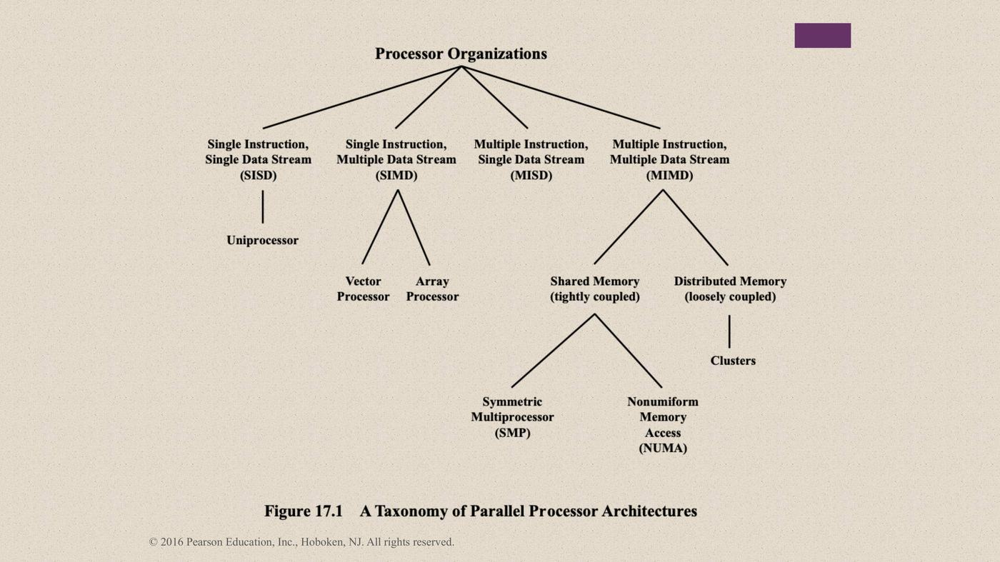
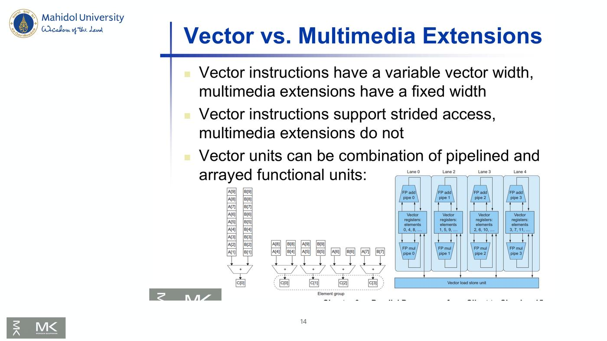
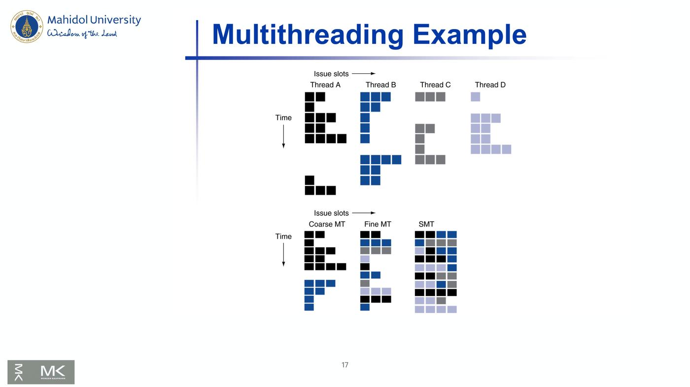
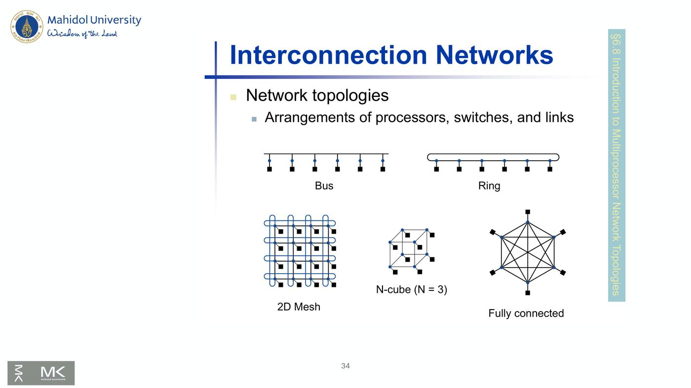

ภาพรวมบทนี้: บทสุดท้ายของครึ่ง Architecture (หัวข้อ "multiprocessor architecture") — ทำอย่างไรให้ได้ performance สูงขึ้นด้วย หลาย processor
เนื้อหา: ความยากของการเขียนโปรแกรมขนาน, การจำแนก SISD/SIMD/MISD/MIMD/SPMD, vector processors, hardware multithreading (fine, coarse, SMT), shared memory (UMA/NUMA), GPU, message passing / clusters / grid, network topologies และ benchmarks
(หนังสือเรียกบทนี้ว่า Chapter 6 — หัวข้อย่อยในสไลด์จึงขึ้นต้นด้วย §6.x)
1. Taxonomy of Parallel Processor Architectures (สไลด์ 3)
(Figure 17.1) Processor Organizations แบ่งเป็น:
- SISD (Single Instruction, Single Data Stream) → Uniprocessor
- SIMD (Single Instruction, Multiple Data Stream) → Vector Processor, Array Processor
- MISD (Multiple Instruction, Single Data Stream)
- MIMD (Multiple Instruction, Multiple Data Stream)
- Shared Memory (tightly coupled) → SMP (Symmetric Multiprocessor), NUMA (Nonuniform Memory Access)
- Distributed Memory (loosely coupled) → Clusters

2. Chapter Overview และ Introduction (สไลด์ 4–5)
Chapter Overview: Introduction • ความยากของการสร้างโปรแกรมประมวลผลขนาน • SISD, MIMD, SIMD, SPMD, Vector • Hardware multithreading • Multicore และ shared memory multiprocessors อื่น ๆ • Introduction to GPUs • Clusters & Message Passing • Introduction to multiprocessor network topologies
Introduction (สไลด์ 5):
- เป้าหมาย: เชื่อมหลายคอมพิวเตอร์เข้าด้วยกันเพื่อ performance สูงขึ้น
- Multiprocessors: scalability, availability, power efficiency
- Task-level (process-level) parallelism: throughput สูงสำหรับงานที่เป็นอิสระต่อกัน
- Parallel processing program: โปรแกรมเดียวรันบนหลาย processor
- Multicore microprocessors: ชิปที่มีหลาย processor (cores)
3. Hardware and Software (สไลด์ 6–7)
| ตัวอย่าง | |
|---|---|
| Hardware Serial | Pentium 4 |
| Hardware Parallel | quad-core Xeon e5345 |
| Software Sequential | matrix multiplication |
| Software Concurrent | operating system |
- software แบบ sequential/concurrent รันบน hardware แบบ serial/parallel ได้ทั้งหมด
- ความท้าทาย: ใช้ parallel hardware ให้ได้ประสิทธิภาพ
สิ่งที่เรียนไปแล้ว (สไลด์ 7):
- §2.11 Parallelism and Instructions — Synchronization
- §3.6 Parallelism and Computer Arithmetic — Subword Parallelism
- §4.10 Parallelism and Advanced Instruction-Level Parallelism
- §5.10 Parallelism and Memory Hierarchies — Cache Coherence
4. Parallel Programming — ความยาก (สไลด์ 8)
- ปัญหาอยู่ที่ parallel software
- ต้องได้ performance ดีขึ้นอย่างมีนัยสำคัญ — ไม่งั้นใช้ uniprocessor ที่เร็วขึ้นก็พอ เพราะง่ายกว่า!
- ความยาก:
- Partitioning (แบ่งงาน)
- Coordination (ประสานงาน)
- Communications overhead (ภาระการสื่อสาร)
5. Instruction and Data Streams (สไลด์ 9)
| Data: Single | Data: Multiple | |
|---|---|---|
| Instruction: Single | SISD: Intel Pentium 4 | SIMD: SSE instructions ของ x86 |
| Instruction: Multiple | MISD: ไม่มีตัวอย่างในปัจจุบัน | MIMD: Intel Xeon e5345 |
- SPMD (Single Program Multiple Data):
- โปรแกรมขนานบนเครื่อง MIMD
- ใช้ conditional code สำหรับ processor ต่าง ๆ
6. Vector Processors (สไลด์ 10–12)
6.1 Vector Processors (สไลด์ 10)
- function units ที่ pipeline สูงมาก
- stream ข้อมูลจาก/ไป vector registers สู่ units
- เก็บข้อมูลจาก memory เข้า registers
- เก็บผลจาก registers กลับ memory
- ตัวอย่าง: Vector extension ของ RISC-V
- v0 ถึง v31: 32 × 64-element registers (element ละ 64 bit)
- คำสั่ง vector:
fld.v, fsd.v: load/store vectorfadd.d.v: บวก vectors ของ doublefadd.d.vs: บวก scalar เข้ากับทุก element ของ vector of double
- ลด instruction-fetch bandwidth ได้มาก
6.2 Example: DAXPY (Y = a × X + Y) (สไลด์ 11)
DAXPY = คำสั่งพีชคณิตเชิงเส้น (linear algebra) ใน library BLAS มาจาก double-precision A·X Plus Y — นำ vector X คูณ scalar a แล้วบวกเข้ากับ vector Y
void daxpy(size_t n, double a, const double x[], double y[]) {
for (size_t i = 0; i < n; i++) {
y[i] = a * x[i] + y[i]; // Y = a*X + Y
}
}
| Conventional RISC-V | Vector RISC-V |
|---|---|
fld f0,a(x3) // load scalar a |
fld f0,a(x3) // load scalar a |
addi x5,x19,512 // end of array X |
fld.v v0,0(x19) // load vector x |
loop: fld f1,0(x19) // load x[i] |
fmul.d.vs v0,v0,f0 // vector-scalar multiply |
fmul.d f1,f1,f0 // a * x[i] |
fld.v v1,0(x20) // load vector y |
fld f2,0(x20) // load y[i] |
fadd.d.v v1,v1,v0 // vector-vector add |
fadd.d f2,f2,f1 // a * x[i] + y[i] |
fsd.v v1,0(x20) // store vector y |
fsd f2,0(x20) // store y[i] |
|
addi x19,x19,8 // increment index to x |
|
addi x20,x20,8 // increment index to y |
|
bltu x19,x5,loop // repeat if not done |
💡 แบบ vector ไม่มีลูป ใช้แค่ 6 คำสั่ง — แบบปกติต้องวนลูป 8 คำสั่งต่อ element
6.3 Vector vs Scalar (สไลด์ 12)
Vector architectures และ compilers:
- ทำให้ data-parallel programming ง่ายขึ้น
- ระบุชัดเจนว่า ไม่มี loop-carried dependences → ลดการตรวจสอบใน hardware
- รูปแบบการเข้าถึงสม่ำเสมอ ได้ประโยชน์จาก interleaved และ burst memory
- เลี่ยง control hazards เพราะไม่ต้องใช้ลูป
- ทั่วไปกว่า media extensions เฉพาะกิจ (เช่น MMX, SSE)
- เข้ากับเทคโนโลยี compiler ได้ดีกว่า
7. SIMD และ Vector vs Multimedia Extensions (สไลด์ 13–14)
7.1 SIMD (สไลด์ 13)
- ทำงานทีละ element บน vectors ของข้อมูล — เช่น MMX และ SSE instructions ใน x86 (หลาย data elements ใน register กว้าง 128 bit)
- ทุก processor ทำคำสั่งเดียวกันในเวลาเดียวกัน (แต่ละตัวใช้ data address ต่างกัน ฯลฯ)
- ทำให้ synchronization ง่ายขึ้น
- ลด hardware ควบคุมคำสั่ง
- เหมาะที่สุดกับงานที่ data-parallel สูง
7.2 Vector vs Multimedia Extensions (สไลด์ 14)
| Vector instructions | Multimedia extensions |
|---|---|
| vector width แปรผันได้ | width คงที่ |
| รองรับ strided access | ไม่รองรับ |
- Vector units เป็น การผสมระหว่าง pipelined และ arrayed functional units ได้
- ภาพ: (ซ้าย) pipeline เดียวบวก A[i]+B[i] ทีละคู่ → C[0] | (กลาง) 4 ตัวบวกพร้อมกันเป็น element group → C[0]–C[3] | (ขวา) 4 lanes แต่ละ lane มี FP add pipe, FP mul pipe และ vector registers ของ element 0,4,8,… / 1,5,9,… / 2,6,10,… / 3,7,11,… ใช้ vector load store unit ร่วมกัน

⚠️ ป้ายในภาพสไลด์เขียน Lane 0, Lane 2, Lane 3, Lane 4 (ข้าม Lane 1)
8. Hardware Multithreading (สไลด์ 15–18)
8.1 Multithreading (สไลด์ 15)
- ทำ thread หลายตัวขนานกัน — ทำสำเนา registers, PC ฯลฯ และ สลับ thread ได้เร็ว
| Fine-grain multithreading | Coarse-grain multithreading | |
|---|---|---|
| สลับเมื่อ | ทุก cycle — interleave การทำคำสั่ง | เฉพาะเมื่อ stall นาน (เช่น L2-cache miss) |
| ผล | ถ้า thread หนึ่ง stall ตัวอื่นทำต่อได้ | hardware ง่ายกว่า แต่ ซ่อน stall สั้น ๆ ไม่ได้ (เช่น data hazards) |
8.2 Simultaneous Multithreading (SMT) (สไลด์ 16)
- ใน processor แบบ multiple-issue ที่ schedule แบบ dynamic
- schedule คำสั่งจาก หลาย thread
- คำสั่งจาก thread ที่เป็นอิสระทำงานเมื่อ function units ว่าง
- ภายใน thread จัดการ dependency ด้วย scheduling และ register renaming
- ตัวอย่าง: Intel Pentium-4 HT — 2 threads: registers ทำซ้ำ, ใช้ function units และ caches ร่วมกัน
8.3 Multithreading Example (สไลด์ 17)
ภาพ issue slots ของ Thread A–D และการรวมแบบ Coarse MT (ทำ thread เดียวเป็นช่วงยาว), Fine MT (สลับ thread ทุกรอบ), SMT (หลาย thread ใช้ issue slots ในรอบเดียวกัน)

8.4 Future of Multithreading (สไลด์ 18)
- จะอยู่รอดไหม? ในรูปแบบใด?
- ข้อพิจารณาด้าน power → microarchitecture ง่ายลง → multithreading แบบง่ายลง
- ทน cache-miss latency: การสลับ thread อาจได้ผลที่สุด
- core ง่าย ๆ หลายตัว อาจแบ่งทรัพยากรกันได้มีประสิทธิภาพกว่า
9. Shared Memory และ Sum Reduction (สไลด์ 19–21)
9.1 Shared Memory (สไลด์ 19)
- SMP: shared memory multiprocessor
- hardware ให้ physical address space เดียว สำหรับทุก processor
- synchronize ตัวแปรที่แชร์ด้วย locks
- Memory access time: UMA (uniform) vs NUMA (nonuniform)
- ภาพ: processor แต่ละตัวมี cache → interconnection network → memory และ I/O
9.2 Example: Sum Reduction (สไลด์ 20–21)
รวม 64,000 ตัวเลขบน UMA 64 processors
- แต่ละ processor มี ID: 0 ≤ Pn ≤ 63
- แบ่ง 1000 ตัวต่อ processor
- รวมเบื้องต้นในแต่ละ processor:
sum[Pn] = 0;
for (i = 1000*Pn; i < 1000*(Pn+1); i += 1)
sum[Pn] += A[i];
- จากนั้นต้องรวม partial sums → Reduction: divide and conquer
- ครึ่งหนึ่งของ processor บวกเป็นคู่ แล้วเหลือหนึ่งในสี่ …
- ต้อง synchronize ระหว่างแต่ละขั้น
half = 64;
do
synch();
if (half%2 != 0 && Pn == 0)
sum[0] += sum[half-1];
/* Conditional sum needed when half is odd;
Processor 0 gets missing element */
half = half/2; /* dividing line on who sums */
if (Pn < half) sum[Pn] += sum[Pn+half];
while (half > 1);
💡 64 → 32 → 16 → 8 → 4 → 2 → 1 ใช้ 6 รอบ ผลรวมสุดท้ายอยู่ที่ sum[0]
10. GPUs (สไลด์ 22–30)
10.1 History of GPUs (สไลด์ 22)
- Early video cards: frame buffer memory พร้อม address generation สำหรับ video output
- 3D graphics processing: แต่เดิมอยู่ในคอมพิวเตอร์ระดับสูง (เช่น SGI) → Moore's Law ทำให้ถูกลงและหนาแน่นขึ้น → การ์ด 3D สำหรับ PC และ game consoles
- Graphics Processing Units: processor สำหรับงานกราฟิก 3D — vertex/pixel processing, shading, texture mapping, rasterization
10.2 Graphics in the System (สไลด์ 23)
ภาพ 3 แบบ: ระบบเก่ามี VGA Controller + Framebuffer Memory บน PCI bus | Intel CPU → North Bridge ↔ GPU ผ่าน x16 PCI-Express Link (GPU มี GPU Memory) | AMD CPU (มี North Bridge ใน CPU) ↔ GPU ผ่าน x16 PCI-Express Link
10.3 GPU Architectures (สไลด์ 24)
- การประมวลผลเป็น data-parallel สูง
- GPU เป็น highly multithreaded
- ใช้ thread switching ซ่อน memory latency → พึ่ง multi-level caches น้อยลง
- graphics memory กว้างและ bandwidth สูง
- แนวโน้มไปทาง general purpose GPUs
- ระบบ heterogeneous CPU/GPU: CPU สำหรับโค้ด sequential, GPU สำหรับโค้ด parallel
- ภาษา/API: DirectX, OpenGL, C for Graphics (Cg), High Level Shader Language (HLSL), Compute Unified Device Architecture (CUDA)
10.4 Example: NVIDIA Fermi (สไลด์ 25–26)
- มี SIMD processors หลายตัว แต่ละตัว: instruction register, 16 SIMD lanes (thread processors) แต่ละ lane มี registers 1K×32 และ load store unit, address coalescing unit, interconnection network, Local Memory 64 KiB, ต่อไปยัง Global Memory
- SIMD Processor: 16 SIMD lanes
- SIMD instruction:
- ทำงานกับ thread กว้าง 32 element
- schedule แบบ dynamic บน processor กว้าง 16 ใน 2 cycles
- 32K × 32-bit registers กระจายใน lanes
- 64 registers ต่อ thread context
10.5 GPU Memory Structures (สไลด์ 27)
- CUDA Thread ↔ Per-CUDA Thread Private Memory
- Thread block ↔ Per-Block Local Memory
- Grid 0, Grid 1 … (ทำตามลำดับ sequence, มี Inter-Grid Synchronization) ↔ GPU Memory
10.6 Classifying GPUs (สไลด์ 28)
- ไม่เข้ากับโมเดล SIMD/MIMD พอดี
- conditional execution ใน thread ทำให้ดูเหมือน MIMD — แต่ performance ลดลง
- ต้องเขียน general purpose code อย่างระวัง
| Static: รู้ตอน compile | Dynamic: รู้ตอน runtime | |
|---|---|---|
| Instruction-Level Parallelism | VLIW | Superscalar |
| Data-Level Parallelism | SIMD or Vector | Tesla Multiprocessor |
10.7 Putting GPUs into Perspective (สไลด์ 29)
| Feature | Multicore with SIMD | GPU |
|---|---|---|
| SIMD processors | 4 to 8 | 8 to 16 |
| SIMD lanes/processor | 2 to 4 | 8 to 16 |
| Multithreading hardware support for SIMD threads | 2 to 4 | 16 to 32 |
| Typical ratio single : double precision performance | 2:1 | 2:1 |
| Largest cache size | 8 MB | 0.75 MB |
| Size of memory address | 64-bit | 64-bit |
| Size of main memory | 8 GB to 256 GB | 4 GB to 6 GB |
| Memory protection at level of page | Yes | Yes |
| Demand paging | Yes | No |
| Integrated scalar processor/SIMD processor | Yes | No |
| Cache coherent | Yes | No |
10.8 Guide to GPU Terms (สไลด์ 30)
| ประเภท | ชื่อเชิงอธิบาย | ชื่อเดิมนอก GPU | ชื่อทางการ CUDA/NVIDIA | ความหมาย (ตามสไลด์) |
|---|---|---|---|---|
| Program abstractions | Vectorizable Loop | Vectorizable Loop | Grid | loop ที่ vectorize ได้ รันบน GPU ประกอบด้วย Thread Blocks หนึ่งตัวขึ้นไป รันขนานกันได้ |
| Body of Vectorized Loop | Body of a (Strip-Mined) Vectorized Loop | Thread Block | loop ที่ vectorize แล้ว รันบน multithreaded SIMD Processor ประกอบด้วย threads of SIMD instructions สื่อสารผ่าน Local Memory ได้ | |
| Sequence of SIMD Lane Operations | One iteration of a Scalar Loop | CUDA Thread | ส่วนแนวตั้งของ thread of SIMD instructions ตรงกับ 1 element ที่ 1 SIMD Lane ทำ ผลเก็บตาม mask และ predicate register | |
| Machine object | A Thread of SIMD Instructions | Thread of Vector Instructions | Warp | thread แบบดั้งเดิมแต่มีแค่ SIMD instructions ที่รันบน multithreaded SIMD Processor ผลเก็บตาม per-element mask |
| SIMD Instruction | Vector Instruction | PTX Instruction | คำสั่ง SIMD เดียวที่รันข้าม SIMD Lanes | |
| Processing hardware | Multithreaded SIMD Processor | (Multithreaded) Vector Processor | Streaming Multiprocessor | รัน threads of SIMD instructions อิสระจาก SIMD Processors อื่น |
| Thread Block Scheduler | Scalar Processor | Giga Thread Engine | กระจาย Thread Blocks ไปยัง multithreaded SIMD Processors | |
| SIMD Thread Scheduler | Thread scheduler in a Multithreaded CPU | Warp Scheduler | hardware ที่ schedule และส่ง threads of SIMD instructions เมื่อพร้อม มี scoreboard ติดตาม | |
| SIMD Lane | Vector lane | Thread Processor | ทำ operations ใน thread of SIMD instructions บน 1 element ผลเก็บตาม mask | |
| Memory hardware | GPU Memory | Main Memory | Global Memory | DRAM ที่ทุก multithreaded SIMD Processor ใน GPU เข้าถึงได้ |
| Local Memory | Local Memory | Shared Memory | SRAM เร็วของ SIMD Processor หนึ่งตัว ตัวอื่นเข้าถึงไม่ได้ | |
| SIMD Lane Registers | Vector Lane Registers | Thread Processor Registers | registers ใน SIMD Lane เดียว จัดสรรตลอด thread block |
💡 คู่ชื่อที่ควรจำ: Grid, Thread Block, CUDA Thread, Warp, Streaming Multiprocessor, Global Memory, Shared Memory
⚠️ ระวัง: "Local Memory" ในชื่อทั่วไป = "Shared Memory" ในชื่อของ NVIDIA
11. Message Passing, Clusters, Grid (สไลด์ 31–33)
11.1 Message Passing (สไลด์ 31)
- แต่ละ processor มี physical address space ของตัวเอง (private)
- hardware ส่ง/รับ messages ระหว่าง processors
- ภาพ: Processor → Cache → Memory แต่ละชุด เชื่อมกันด้วย Interconnection Network
11.2 Loosely Coupled Clusters (สไลด์ 32)
- เครือข่ายของคอมพิวเตอร์อิสระ — แต่ละเครื่องมี memory และ OS ของตัวเอง
- เชื่อมผ่าน I/O system เช่น Ethernet/switch, Internet
- เหมาะกับงานที่มี task อิสระ: web servers, databases, simulations, …
- High availability, scalable, affordable
- ปัญหา:
- ค่าดูแลระบบ (นิยมใช้ virtual machines)
- interconnect bandwidth ต่ำ (เทียบกับ processor/memory bandwidth ของ SMP)
11.3 Grid Computing (สไลด์ 33)
- คอมพิวเตอร์แยกกันเชื่อมด้วย long-haul networks เช่น Internet
- แจกงาน (work units) ออกไป แล้วส่งผลกลับ
- ใช้ เวลาว่างของ PC ได้ — เช่น SETI@home, World Community Grid
| Shared memory (SMP) | Message passing / Clusters | |
|---|---|---|
| Address space | เดียวร่วมกัน | แต่ละ processor มีของตัวเอง |
| สื่อสาร | ผ่าน memory + locks | ส่ง/รับ messages |
| Coupling | tightly coupled | loosely coupled |
12. Interconnection Networks (สไลด์ 34–36)
12.1 Network topologies (สไลด์ 34)
การจัดวาง processors, switches และ links:
- Bus
- Ring
- 2D Mesh
- N-cube (N = 3)
- Fully connected

12.2 Multistage Networks (สไลด์ 35)
- (a) Crossbar: P0–P7 เชื่อมกันผ่านตารางจุดตัด
- (b) Omega network: P0–P7 ผ่าน switch box หลายชั้น
- (c) Omega network switch box: input A, B → output C, D
12.3 Network Characteristics (สไลด์ 36)
- Performance:
- Latency per message (unloaded network)
- Throughput: link bandwidth, total network bandwidth, bisection bandwidth
- Congestion delays (ขึ้นกับ traffic)
- Cost
- Power
- Routability in silicon
13. Parallel Benchmarks และ Modeling Performance (สไลด์ 37–39)
13.1 Parallel Benchmarks (สไลด์ 37)
| Benchmark | ลักษณะ |
|---|---|
| Linpack | matrix linear algebra |
| SPECrate | รัน SPEC CPU programs แบบขนาน — job-level parallelism |
| SPLASH | Stanford Parallel Applications for Shared Memory — ผสม kernels และ applications, strong scaling |
| NAS | NASA Advanced Supercomputing suite — computational fluid dynamics kernels |
| PARSEC | Princeton Application Repository for Shared Memory Computers — multithreaded applications ใช้ Pthreads และ OpenMP |
13.2 Code or Applications? (สไลด์ 38)
- benchmark แบบดั้งเดิม: code และ data sets คงที่
- parallel programming กำลังพัฒนา — algorithms, programming languages และ tools ควรเป็นส่วนหนึ่งของระบบไหม?
- เทียบระบบโดยให้ implement application ที่กำหนด — เช่น Linpack, Berkeley Design Patterns
- จะส่งเสริมนวัตกรรมในแนวทาง parallelism
13.3 Modeling Performance (สไลด์ 39)
- สมมติ metric ที่สนใจคือ achievable GFLOPs/sec — วัดด้วย computational kernels จาก Berkeley Design Patterns
- Arithmetic intensity ของ kernel = FLOPs ต่อ byte ของ memory ที่เข้าถึง
- สำหรับคอมพิวเตอร์หนึ่งเครื่อง หา:
- Peak GFLOPS (จาก data sheet)
- Peak memory bytes/sec (ใช้ Stream benchmark)
14. Concluding Remarks (สไลด์ 40)
- เป้าหมาย: performance สูงขึ้นด้วยหลาย processor
- ความยาก: พัฒนา parallel software และออกแบบ architecture ที่เหมาะสม
- SaaS สำคัญขึ้นเรื่อย ๆ และ clusters เข้ากันได้ดี
- Performance per dollar และ performance per Joule เป็นตัวขับทั้ง mobile และ WSC
คำศัพท์สำคัญ
| คำศัพท์ | ความหมาย | จำง่าย ๆ ว่า |
|---|---|---|
| SISD / SIMD / MISD / MIMD | Flynn: instruction × data stream | Pentium 4 / SSE / ไม่มี / Xeon |
| SPMD | โปรแกรมเดียวหลายข้อมูล บน MIMD | conditional code |
| Vector processor | function units pipeline สูง + vector registers | v0–v31 × 64 element |
| DAXPY | Y = aX + Y (BLAS) | vector ไม่ต้องวนลูป |
| Multimedia extensions | MMX, SSE (width คงที่, ไม่มี stride) | |
| Fine / Coarse-grain MT | สลับทุก cycle / สลับเมื่อ stall นาน | |
| SMT | หลาย thread ใช้ issue slots พร้อมกัน | Pentium-4 HT |
| SMP | shared memory multiprocessor | address space เดียว + locks |
| UMA / NUMA | เวลาเข้าถึง memory เท่ากัน / ไม่เท่ากัน | |
| Reduction | รวมผลแบบ divide and conquer | ต้อง synch ทุกขั้น |
| GPU | processor data-parallel, multithreaded สูง | ซ่อน latency ด้วย thread switch |
| CUDA | ภาษา/API ของ NVIDIA | |
| Warp | thread of SIMD instructions | |
| Message passing | private address space + ส่งข้อความ | clusters |
| Cluster | คอมพิวเตอร์อิสระเชื่อมผ่าน I/O | loosely coupled |
| Grid computing | เชื่อมผ่าน long-haul network | SETI@home |
| Bisection bandwidth | ตัววัด throughput ของ network | |
| Arithmetic intensity | FLOPs ต่อ byte |
สรุปท้ายบท / จุดที่มักออกสอบ
- Taxonomy: SISD → uniprocessor | SIMD → vector, array processor | MIMD → shared memory (SMP, NUMA) และ distributed memory (clusters)
- เป้าหมาย multiprocessor: scalability, availability, power efficiency
- Hardware serial/parallel × software sequential/concurrent (matrix multiplication = sequential, OS = concurrent)
- ความยาก parallel programming: partitioning, coordination, communications overhead
- Flynn ตัวอย่าง: SISD Pentium 4, SIMD SSE (x86), MISD ไม่มี, MIMD Xeon e5345 | SPMD = parallel program บน MIMD
- Vector: v0–v31 (32 × 64-element, 64-bit), fld.v/fsd.v/fadd.d.v/fadd.d.vs, ลด instruction-fetch bandwidth, เลี่ยง control hazards, ไม่มี loop-carried dependence
- Vector vs multimedia: variable vs fixed width | strided access มี vs ไม่มี
- SIMD: ทุกตัวทำคำสั่งเดียวกันพร้อมกัน, เหมาะกับงาน data-parallel สูง
- Fine-grain (สลับทุก cycle) | Coarse-grain (สลับเมื่อ L2 miss, ซ่อน stall สั้นไม่ได้) | SMT (หลาย thread พร้อมกันใน multiple-issue, Pentium-4 HT)
- SMP: address space เดียว, locks, UMA vs NUMA | Sum reduction 64,000 ตัว / 64 processors = 1000 ตัวต่อ processor แล้ว reduce ครึ่งละครึ่ง + synch
- GPU: data-parallel, highly multithreaded, thread switch ซ่อน latency, cache น้อย, memory กว้าง | CPU = sequential, GPU = parallel | DirectX, OpenGL, Cg, HLSL, CUDA
- Fermi: 16 SIMD lanes, thread กว้าง 32 element ใน 2 cycles, 32K×32-bit registers, 64 registers/thread
- GPU ไม่เข้ากับ SIMD/MIMD พอดี | ตาราง: VLIW (static ILP), superscalar (dynamic ILP), SIMD/vector (static DLP), Tesla (dynamic DLP)
- GPU vs multicore: GPU ไม่มี demand paging, ไม่ cache coherent, ไม่มี integrated scalar processor, cache 0.75 MB vs 8 MB
- Message passing: private address space | Clusters: high availability, scalable, affordable แต่ admin cost สูง, interconnect bandwidth ต่ำ | Grid: long-haul, SETI@home
- Topologies: bus, ring, 2D mesh, N-cube, fully connected | multistage: crossbar, omega
- Network characteristics: latency, throughput (link/total/bisection bandwidth), congestion, cost, power, routability
- Benchmarks: Linpack, SPECrate, SPLASH, NAS, PARSEC | Arithmetic intensity = FLOPs/byte
- สรุป: SaaS + clusters, performance per dollar และ per Joule